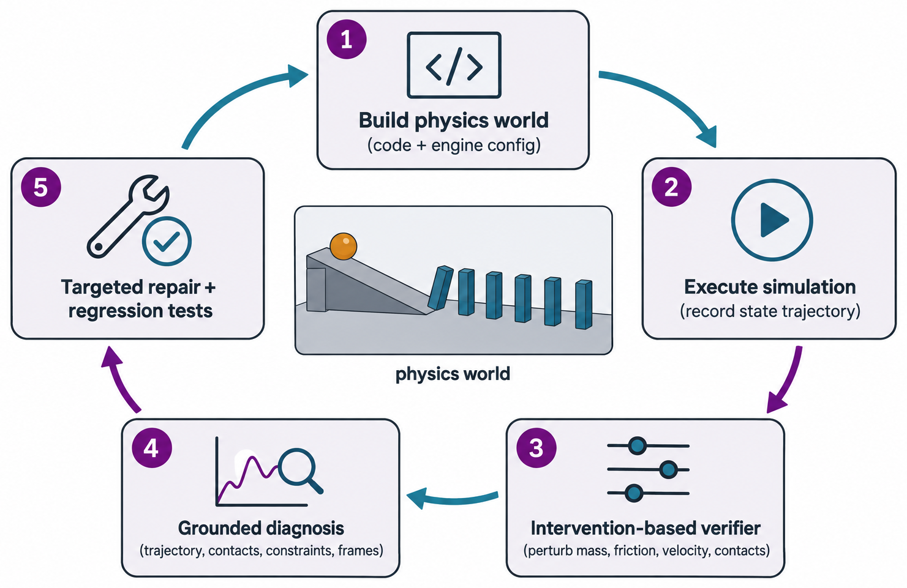

三、课题研究内容
□ 研究三（二·续）：基于物理状态与干预测试的验证、诊断与定向修复
应用
CLI

方法框架：构建物理世界 → 执行仿真 → 干预验证 → 落地诊断 → 定向修复与回归测试
RQ1 · 物理泛化
未见过的质量、摩擦、碰撞参数、初速度、外力下仿真是否仍正确
RQ2 · 错误诊断
能否区分碰撞体、摩擦设置、数值积分不稳定等原因，而非随机调参
RQ3 · 可靠修复
利用物理状态与视觉证据修复，并通过回归测试（Regression Tests）
核心消融（同一模型、工具权限与计算预算）
One-shot
不提供反馈
Execution Feedback
运行错误与报错日志
Visual Feedback
渲染图与动画
Physical State Feedback
位置、速度、接触、能量
Ours
状态 + 干预测试 + 定向修复
指标：反事实通过率 · 修复成功率 · 回归失败率 · 成本
目标：从评测"能否生成会动的世界"推进到评测"能否构建条件变化下仍遵守物理规律的世界"